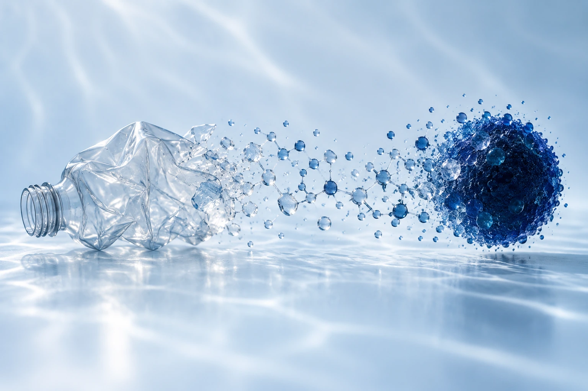

Plastic waste.
A new purpose.
What if the plastic we leave behind could help protect what lies ahead?
We’re MELANIFY. We’re exploring a biological pathway that transforms PET plastic into allomelanin — a pigment with potential for UV protection.

Two challenges.
One connected idea.
Plastic persists. Sun exposure is a daily reality. Our project begins by asking whether a material we discard could become something useful.
By connecting PET degradation with biological upcycling, we’re investigating a route to allomelanin, a functional biomaterial with potential UV-shielding properties.
Read our project story
A local question.
A wider possibility.
Our community helped us connect plastic waste with Thailand’s intense UV exposure. Conversations with researchers and industry partners turned that question into a platform for exploring valuable PET-derived compounds.
Meet the conversations Community-informed. Research-led.Small steps.
Molecular change.
Six connected stages, from a persistent polymer to a new material. Explore the proposed MELANIFY pathway.
PET plastic
A persistent polymer becomes the starting point for our proposed upcycling pathway. Engineered Pichia pastoris is used to produce and secrete HotPETase.
Explore this stageMHET
HotPETase begins PET degradation. Surface-displayed MHETase is intended to convert the resulting MHET into terephthalic acid.
Explore this stageTerephthalic acid
The tphA1, tphA2, tphA3 and tphB pathway is designed to convert recovered TPA into protocatechuate, connecting PET degradation with a downstream biological route.
Explore this stageProtocatechuate
PCA is the intermediate that connects the TPA pathway to catechol production. AroY performs the decarboxylation step with cofactor support from EcdB and EcdD.
Explore this stageCatechol
Catechol is the precursor for the final material. Oxidation and polymerization form the next stage of the proposed MELANIFY pathway.
Explore this stageAllomelanin
The pathway aims to produce catechol-melanin, or allomelanin. Its potential as a UV-shielding material is a research direction that requires further material and safety validation.
Explore this stageEvery part of
the bigger picture.
Follow our work from the first design decision to the conversations beyond the laboratory.
Engineering
Design. Build. Test. Learn.Follow the iterative work behind our enzymes and conversion pathways.
EXPLORE CHAPTERResults
A closer look at the evidence.Explore the supplied molecular dynamics analyses and structural figures.
EXPLORE CHAPTERProtocols
Methods, made accessible.Browse the laboratory notebook for our Pichia pastoris expression line.
EXPLORE CHAPTERHuman practices
Listening shapes the science.Discover how community and expert feedback influenced MELANIFY.
EXPLORE CHAPTEREducation
Making room for curiosity.See how laboratory experience became lessons and a lasting student club.
EXPLORE CHAPTEREntrepreneurship
A pathway toward application.Explore the commercial questions behind biological PET upcycling.
EXPLORE CHAPTER